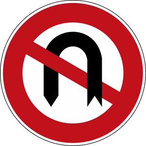

Zeichen 272
Verbot des Wendens

3 Tatbestände dazu
141205Sie beachteten nicht das bestehende Wendeverbot (Zeichen 272).
20 €
141206
Sie beachteten nicht das bestehende Wendeverbot (Zeichen 272) und gefährdeten +) dadurch Andere.
30 €
141207
Sie beachteten nicht das bestehende Wendeverbot (Zeichen 272). Es kam zum Unfall.
35 €